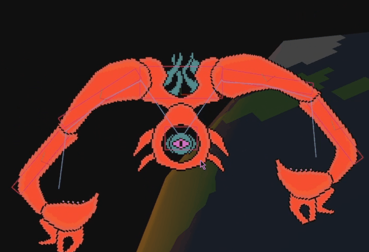
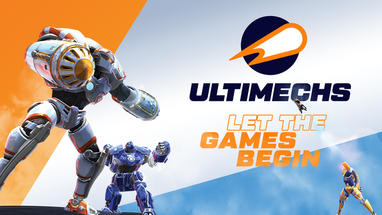
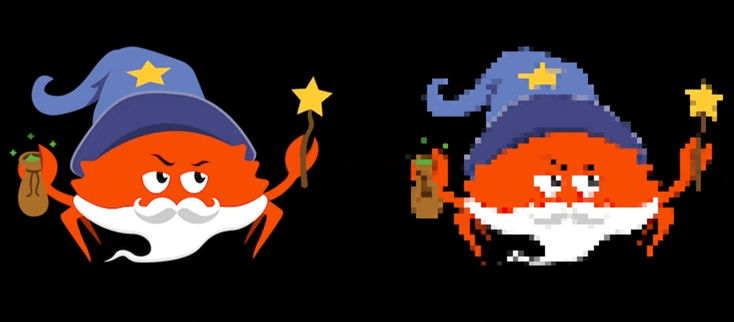
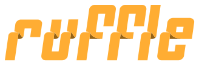

This Month in Rust GameDev #38 - September 2022
Welcome to the 38th issue of the Rust GameDev Workgroup's monthly newsletter. Rust is a systems language pursuing the trifecta: safety, concurrency, and speed. These goals are well-aligned with game development. We hope to build an inviting ecosystem for anyone wishing to use Rust in their development process! Want to get involved? Join the Rust GameDev working group!
You can follow the newsletter creation process by watching the coordination issues. Want something mentioned in the next newsletter? Send us a pull request. Feel free to send PRs about your own projects!
- Announcements
- Game Updates
- Engine Updates
- Learning Material Updates
- Tooling Updates
- Library Updates
- Other News
- Popular Workgroup Issues in Github
- Discussions
- Requests for Contribution
- Bonus
Announcements
Rust GameDev Meetup

The 20th Rust Gamedev Meetup took place in September. You can watch the recording of the meetup here on Youtube.
The meetups take place on the second Saturday every month via the Rust Gamedev Discord server and are also streamed on Twitch.
Game Updates
CyberGate
 building shelter and fighting a colony of red monsters
building shelter and fighting a colony of red monsters
CyberGate (YouTube, Discord) by CyberSoul is an attempt to use artificial intelligence to build diverse universe experiences with strange creatures and procedural gameplay styles. Currently in Phase 5.2 (analogously version 0.5.2), they finalized a playable game with the tech they have developed up until now.
Recent updates:
- In-house Transport layer with Reliability and Package aggregation, over WebRTC
- Implemented Winit background process on all browsers
- Introduced Grabbing and Building Mechanics
- Created enemy AI that groups and flies in colonies. Includes a deadly night mode
- Usernames and life points with Fontdue.rs
- Menu and leaderboard using yakui.rs
- Improved the Automation to push Server Updates
- Improved wasm related performance, latency, and connection freezing bugs.
Join the Discord server to participate in upcoming Phase 6.0!
Discussions: /r/rust_gamedev
Graviton
 Take a little break to relax and draw some sand art
Take a little break to relax and draw some sand art
Graviton by @hakolao is a relaxing simulation game in which you draw colored sand and watch it interact with gravity.
The game is going to be released in early access on Steam during this October.
Discussions: /r/rust_gamedev
Flesh
 4th area
4th area
Flesh by @im_oab is a 2D-horizontal shmup game with hand-drawn animation and an organic/fleshy theme. It is implemented using Tetra. This month's updates include:
- Finishing up the last area of the game.
- Making animation of the game's intro/ending.
Thetawave
 First boss in progress
Thetawave is a physics based, cosmic horror themed space shooter by @carlosupina. In the past month, work has begun on the first boss enemy in the game, the Repeater.
Thetawave has also joined the @spicylobsterfam incubator. Feel free to reach out to the developer if you are interested in contributing!
Ultimechs

Ultimechs (Discord, Twitter, Facebook, Reddit, YouTube) by Resolution Games is a future sports game played with mechs. It is VR, multiplayer, and free to play.
Ultimechs is partially written in Rust. The Rust code is for the core of the game, including the game rules, networking, and physics (that use Rapier). The rest of the game, including the graphics, audio, user input, and everything that happens outside the arena, is made in Unity.
The game was released on the 15th of September on the Meta Quest 2 and SteamVR.
There is a conference talk and a blog post about the choice of Rust and how they combined Rust with the studio's standard tools Unity and C#. Another blog post goes into more depth about calling Rust code from C# in Unity.
eo.rs
NPCs chatting in the game world
eo-rs by @sorokya is a development library and game server for the MMORPG Endless Online.
Recent updates:
- Made NPCs appear and move around in the game world
- Created a proxy tool to document interactions between the original client and server
- Implemented player stat calculations
- Made NPCs talk
Tiny Building Game
The untitled "Tiny Building Game" is a stress-free feel-good game focused on just building something pretty. It is being made by @anastasiaopara and @h3r2tic.
This month, the team welcomed Martin (sound design) and Oda (music) as well as adding various game elements, such as fences, gates, pillars and butterflies. You can watch this short YouTube video to catch a glimpse of how it's all coming together.
Right now, the team is working towards the game announcement. Stay tuned by following the newsletter!
Veloren
Riding into the sunset
Veloren is an open world, open-source voxel RPG inspired by Dwarf Fortress and Cube World.
In September the official Veloren server saw a new all time high of more than 400 players logged in at the same time, with an average load of 200 players. This caused slow in-game responses and the development team quickly optimized to reduce the server load and introduced a new graphical server browser for balancing.
Due to the more diverse user base, a lot of languages received translation updates. The most common crash dialog was improved to suggest the workaround of trying a different graphics backend, while the large number of players still using DX11 block an upgrade to a more recent WGPU version.
Septembers's full weekly devlogs: "This Week In Veloren...": #188, #189, #190.
Subfuse
Escape the hotel
Subfuse is a short 1st person puzzle/escape game made for Bevy Jam #2 with an accompanying postmortem that goes into some detail about the process of making the game.
Engine Updates
godot-rust
 The new
The new #[method] syntax, which replaces existing #[export] and allows omitting
the base parameter.
godot-rust (GitHub, Discord, Twitter) is a Rust library that provides bindings for the Godot engine. In September, development was divided into three tasks:
- Maintenance releases 0.10.1 and 0.10.2
- Godot 3.5 support in v0.11 (#910)
- Ongoing GDExtension efforts (#824)
Besides support for Godot 3.5.1, a change that many users will notice is the
new #[method] + #[base] syntax, replacing #[export] as illustrated above.
The GDExtension/Rust binding has finally reached a state where a first experimental version is within reach in October. If you are fine with the bugs and missing features, you can give it a try very soon!
Gamercade
 Gamercade Sprite Animations
Gamercade Sprite Animations
Gamercade (Discord, Github) by @RobDavenport is a WASM-powered fantasy console focused on building multiplayer neo-retro games.
Gamercade has launched their first official release! Version 0.1.0 has
all of the functions and features need to start building awesome single-
and multi-player games: input, graphics, audo, networking, and more.
The full release article goes into higher detail about
the feature set of Gamercade, and includes example images and animations.
Full controller support made it into the 0.1.0 release, including analog
sticks, analog triggers, as well as emulation of those for those without
a game pad. Additionally, they added a command line tool, called gccl which
streamlines many of the pain points in developing Gamercade games. A number of
quality-of-life and bug fixes also made it into the release.
The team is already planning out their feature set for the next release, 0.2.0,
which is based around the theme of "two." The next release will include more
multiplayer features like two or more local players, two or more networked instances,
stereo sound support, and much more.
Come hang out and chat on Discord, where the developers interact with members and post updates daily. The project is open source and looking for contributors, suggestions, as well as your awesome game creations.
Dims

Dims (Twitter, Discord, YouTube) is a pre-alpha collaborative open-world creation platform. Users can hop in sessions and build a game together, allowing everyone to bring out their inner game-maker.
In September, the platform continued to make steady progress, with new features and bugfixes being made on a daily basis. The highlights are:
- The team's very first game of entirely scripted multiplayer Team Deathmatch 🎉
- All player logic was moved to the Rust scripting layer, allowing for it to be changed on the fly
- The implementation of animation retargeting, so you can use any animation with any model, as long as they share the same skeletal structure
- Scripting now has greater access to the ECS, allowing it to move the sun 🌅
- Initial work on an asset database and pipeline, so that you can import any asset and use it amongst your Dims projects
- An all-new object manipulation/placement tool suite
- Objects can now be consistently stacked, moved as a group, placed within each other, and more!
- Many other infrastructural changes and improvements, including macOS and Linux builds
Want to try Dims out for yourself? Come join the Discord to be notified of future public tests, see the latest features before everyone else, and to talk to the devs personally.
Learning Material Updates
Making a turn-based multiplayer game in Rust

@herluf-ba published a beginner friendly 3 part tutorial series about making turn-based multiplayer games using rust. It covers what games can be considered "turn-based", how to write a simple but neat game server using renet, and finally how to tie it all together with a client app made with bevy.
Chris Biscardi's Monthly Roundup
@chrisbiscardi publishes a Rust video every day each month on YouTube.
This month started off with a low-level WGPU series that focuses on WGPU APIs as a primitive to understand Bevy's renderer. Moving forward with that, he explored debugging shaders with RenderDoc, porting shaders from Blender to Bevy, generating custom meshes and interesting types of noise.
At a higher level, Chris covered a comparison between Bevy and Nannou for creative coding endeavours and the top 10 games from Bevy Game Jam #2. He also put (more than) 1 million particles inside of a Bevy app, and continued working on a 2D platformer implementation.
Tooling Updates
Feldversuch
Feldversuch by @siebencorgie is an experimental extension to the class of wavetable synthesizers based on signed distance fields.
Feldversuch uses user defined fields not only to render the interface, but to generate sound based on them as well. The so-called sampling plane (seen moving back and forth above) defines the wave shape that is played back.
Further experiments include rotation (instead of the sweep movement) as well as different interpretations of the wave shape. Have a look at the presentation video and the blog post for further details.
Library Updates
bevy_oddio
 an example using bevy_oddio
an example using bevy_oddio
bevy_oddio by @harudagondi is an audio plugin for the Bevy game engine that uses the oddio library. It aims to allow first class support of non-static audio sources like procedurally generated audio. The library also aims to have a high amount of flexibility in controlling custom audio sources where typical audio sink methods would not suffice.
The previous month saw a new 0.2.0 release which
irons out some bugs and added new ergonomic features to allow a
better user experience. There is now added support for Mono
and Stereo audio sources, support for more oddio
types, a new example for controlling volume, and much more.
A lot of the APIs have been reworked to make it more flexible
and some public items were deleted to reduce redundancy.
The above screen shows an example of controlling a custom made audio source (taken from here) by calling the .control() method.
Particular
Showcase using the demo
Particular by @Canleskis is a library allowing for simulations of N-body gravitational interaction of particles. It aims to be simple to integrate in existing game and physics engines, such as Bevy or Rapier. See the demo source code for the example of an integration (less than 50 actual lines of code!). The demo is available on the browser (Chromium-based recommended) with various scenes you can interact with.
Particular can be used with rayon to leverage multithreading on the
CPU (parallel feature). Although the current algorithm performs well enough
for most use cases, with a single frame taking around 5 ms with 5000 particles
on an I9 9900K, future updates will introduce other implementations to allow for
faster computation of the forces (example: Barnes-Hut).
You can find more about Particular with this video from @ChristopherBiscardi, or this post on Reddit.
Notan v0.7

Notan is a simple and portable layer designed to create your own apps on top of it without worrying about platform-specific code.
It provides a set of APIs and tools that can be used to create your project in an ergonomic manner without enforcing any structure or pattern, sharing the same codebase across multiple platforms.
The focus of version v0.7 was improvements and fixes, however the main
improvement was how textures are created, allowing to create textures that
depend on the backend. The main benefit of this new feature is that Notan
can now load on browsers to the GPU HtmlImageElement or it could load
other types of browser's images as well (like HtmlCanvasElement).
Polyanya
Navigating through a mesh in the online demo
Polyanya by @FrancoisMockers is a library implementing Polyanya, a Compromise-free Pathfinding algorithm on a Navigation Mesh. It is currently the fastest known optimal online any angle path planning algorithm. Unlike A*, any angle path planning techniques are not bound to a grid and will find a taut path.
An integration with Bevy is on-going, with a few examples available in WASM. Next area of work will be around navigation mesh editing.
Popular Workgroup Issues in Github
Other News
- Other game updates:
- Disk-0 Madness is a bullet hell game, written in Rust for the WASM-4 fantasy console.
- Combine and Conquer released version 0.1, moving into early access.
- bevy-rapier-car-sim is a 3D car simulation in Rust.
- PongRust is an 'unbeatable' Pong game.
- My Roguelite is a browser-based 3D roguelite.
- Life Code is an ecosystem simulation game.
- Klod released a retrospective post about their Katamari-inspired platformer.
- Other engine updates:
- Rustacean Station interviewed the developer of the Fyrox engine.
- The Fyrox Book added a new chapter on property inheritance.
- Bevy's scheduling overhaul RFC was merged.
- Other learning material updates:
- LogRocket posted about Bevy's ECS API.
- Wade Zimmerman wrote about their native iOS game dev journey with Rust.
- Rust and Tell featured a talk on hot reloading.
- Bevy Basics continued their series of beginner Bevy tutorials.
- Yishn coded an Astroids clone with Bevy.
- Other library updates:
- big-brain released version 0.14 of its Utility AI library, with fixes and lots more observability improvements.
- egui_dock adds docking support to egui.
- Valence is a framework for building Minecraft servers in Rust.
- Luminance is a type-safe graphics framework, which is currently undergoing a major rewrite.
- Bevy ECSS is a library for integrating a subset of CSS with Bevy's ECS system.
- dtm is a fast encoder/decoder for the DTM image format.
Discussions
- /r/rust_gamedev
Requests for Contribution
- 'Are We Game Yet?' wants to know about projects/games/resources that aren't listed yet.
- Graphite is looking for contributors to help build the new node graph and 2D rendering systems.
- winit's "difficulty: easy" issues.
- Backroll-rs, a new networking library.
- Embark's open issues (embark.rs).
- wgpu's "help wanted" issues.
- luminance's "low hanging fruit" issues.
- ggez's "good first issue" issues.
- Veloren's "beginner" issues.
- A/B Street's "good first issue" issues.
- Mun's "good first issue" issues.
- SIMple Mechanic's good first issues.
- Bevy's "good first issue" issues.
Bonus

Ruffle is an open-source Flash Player emulator, written in Rust. It aims to run natively on all modern operating systems and web browsers, leveraging Rust's memory safety guarentees to avoid the security pitfalls that Flash became notorious for in its later years.
Many of today's game developers got their start developing in Flash, and Ruffle aims to help preserve this part of internet (and gaming!) history for future generations to look back on.
For a look back at the history of Flash gaming, and the influence it has has on games today, check out Flash Game History.
That's all news for today, thanks for reading!
Want something mentioned in the next newsletter? Send us a pull request.
Also, subscribe to @rust_gamedev on Twitter or /r/rust_gamedev subreddit if you want to receive fresh news!
Discuss this post on: /r/rust_gamedev, Twitter, Discord.